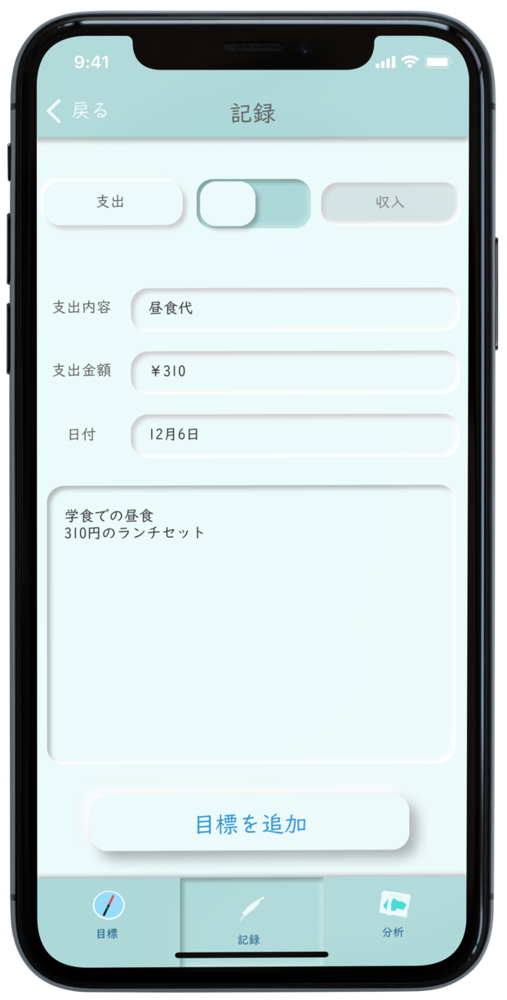
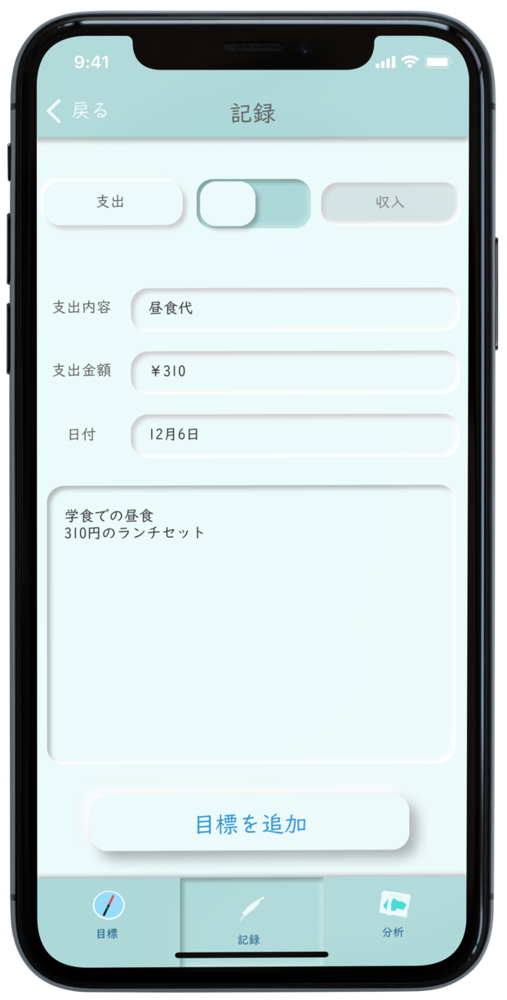
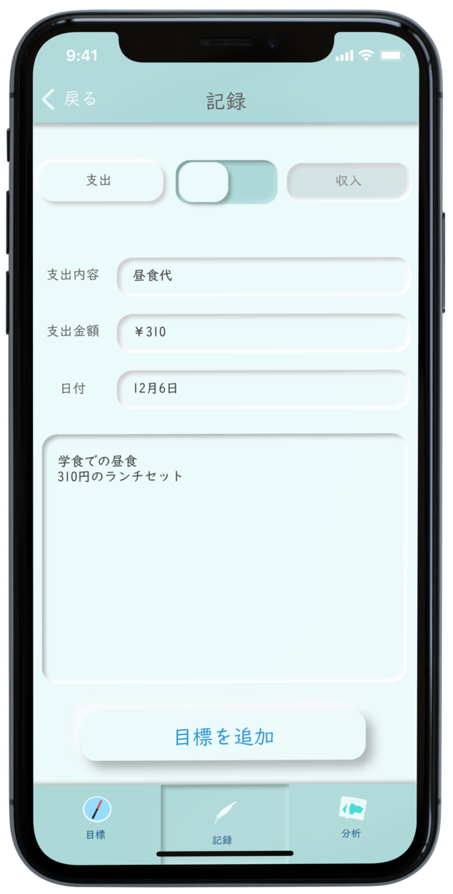
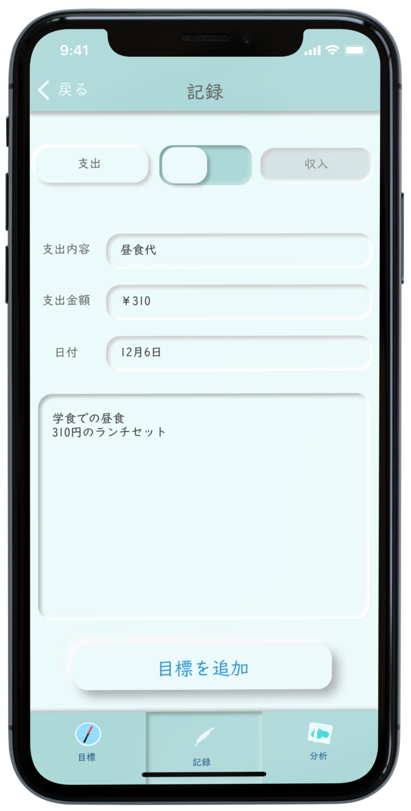

 

テーマ：学生にソーシャルディスタンスを促すウェブサイト
コンセプト：
ターゲット： 学生
制作期間： 一ヵ月
解決する問題： ソーシャルディスタンスのわかりにくさ
仕様ツール・言語： HTML, CSS, javascript, Adobeillustrator
フォント： 注意喚起を促すような角ばったフォントが最も適していると考え、マキナスというフリーフォントを使用した。
大学生にソーシャルディスタンスを促すサイトを作成するということで、ソーシャルディスタンスとはどのようなものかを認識している学生が少ないのではないかという考えに至った。
「ソーシャルディスタンスとは何か」をはっきりと伝えることがソーシャルディスタンスを促すことにつながるのではないかと考え、このサイトを作成した。
わかりやすくはっきりと情報を伝えるにはピクトグラムを用いるのが最善だと考え、ピクトグラムをすべて自作した。